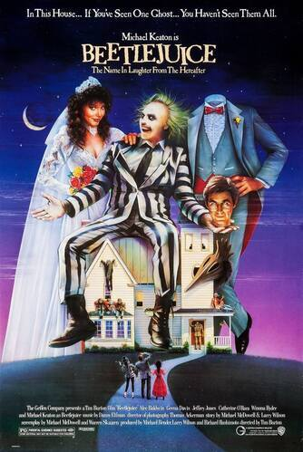

Personagens pertencente à Warner Bros. Pictures.
Baseado no filme Beetlejuice (1988), dirigido por Tim Burton.

Após morrerem em um acidente de carro, Bárbara e Adam Maitland se encontram presos, assombrando sua antiga casa. Quando uma nova família e sua filha adolescente, Lydia, mudam para a residência, o casal de fantasmas tenta, sem sucesso, assustar os novos moradores. Suas tentativas de assombração atraem um espírito espalhafatoso, cuja ajuda se torna perigosa tanto para o par de almas, quanto para a inocente Lydia.
Uma entidade caótica, extravagante e completamente imprevisível. Beetlejuice é um “bioexorcista” do além que adora confusão, manipulação e humor macabro. Com seu jeito excêntrico e comportamento impulsivo, ele transforma qualquer situação em um espetáculo perturbador e divertido. Apesar de parecer apenas um trapaceiro brincalhão, ele é perigoso, manipulador e sempre procura uma forma de conseguir vantagens para si mesmo.
Embora seja o personagem mais famoso do filme, Beetlejuice aparece por poucos minutos em tela em Beetlejuice. Mesmo assim, a atuação de Michael Keaton foi tão marcante que o personagem virou um ícone da cultura pop.
Um casal gentil, tranquilo e apaixonado que sonhava em viver uma vida simples em sua casa no interior. Após um acidente trágico, acabam presos entre o mundo dos vivos e dos mortos. Diferente de espíritos assustadores, Adam e Barbara são inocentes, desajeitados e emocionalmente humanos, tentando desesperadamente proteger seu lar enquanto lidam com a estranha realidade da morte.
O casal foi pensado para representar “fantasmas diferentes” dos tradicionais filmes de terror. Em vez de assustadores, eles são tímidos, atrapalhados e emocionalmente humanos.
Uma adolescente introspectiva, sombria e extremamente inteligente. Lydia se sente deslocada do mundo ao seu redor e encontra conforto justamente no estranho e no sobrenatural. Fascinada pela morte e pelo desconhecido, ela possui uma sensibilidade única que permite enxergar além do que as outras pessoas conseguem perceber. Sua personalidade gótica e sua visão melancólica da vida fizeram dela uma das personagens mais icônicas do cinema.
A personagem se tornou um símbolo da estética gótica dos anos 80. A atuação de Winona Ryder ajudou Lydia a virar uma personagem cultuada até hoje.
Uma criatura monstruosa do além, gigantesca e aterrorizante, habitante do deserto sobrenatural do mundo dos mortos. O verme de areia surge como uma força selvagem e destrutiva, capaz de devorar tudo em seu caminho. Sua aparência grotesca e comportamento agressivo simbolizam o perigo constante existente fora dos limites seguros do pós-vida. Mesmo aparecendo poucas vezes, tornou-se uma das criaturas mais memoráveis do universo de Beetlejuice.
O visual do verme de areia foi inspirado em criaturas de filmes clássicos de monstros e em designs surrealistas típicos do estilo de Tim Burton. Mesmo aparecendo pouco, ele virou uma das imagens mais reconhecidas da franquia.
Beetlejuice 2 foi lançado décadas depois do sucesso de Beetlejuice, marcando o retorno de um dos universos mais icônicos de Tim Burton.
Durante muitos anos, fãs pediram uma continuação do filme original. Vários roteiros chegaram a ser discutidos ao longo das décadas, mas o projeto acabou sendo adiado diversas vezes. A sequência finalmente ganhou força quando Tim Burton decidiu retornar à direção e parte do elenco clássico aceitou voltar.
O lançamento trouxe de volta nomes marcantes como:
Além disso, o filme apresentou uma nova geração de personagens, incluindo a participação de Jenna Ortega, o que ajudou a aproximar a franquia de um público mais jovem.
Uma das coisas que mais chamou atenção no lançamento foi o fato de o filme manter grande parte da estética prática e artesanal do original, usando muitos efeitos práticos em vez de depender totalmente de CGI moderno. Isso fez muitos fãs sentirem que a sequência preservou a identidade caótica, sombria e caricata do primeiro filme.
O retorno da franquia gerou enorme repercussão nas redes sociais, especialmente entre fãs da cultura gótica, do cinema dos anos 80 e admiradores do estilo visual único de Tim Burton.